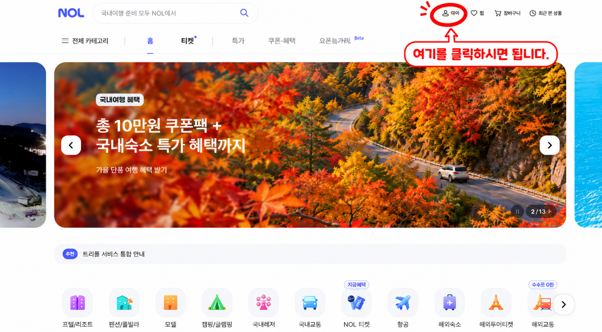
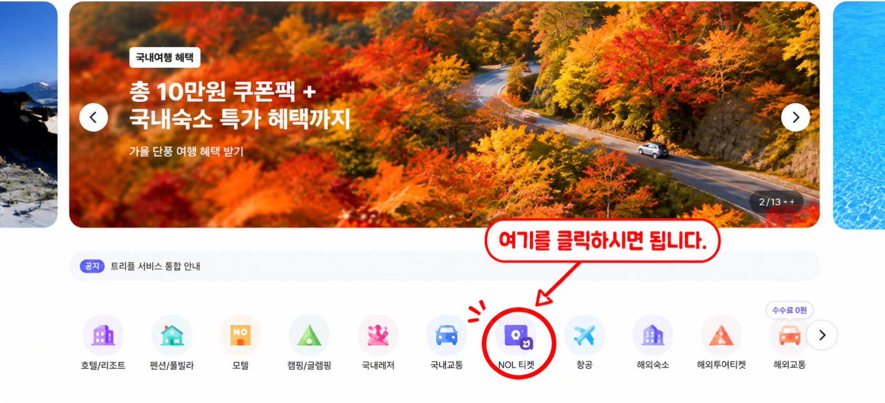
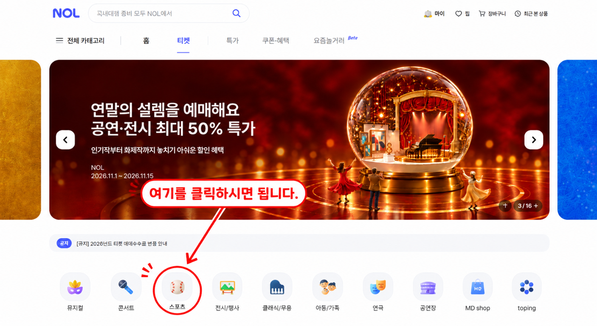
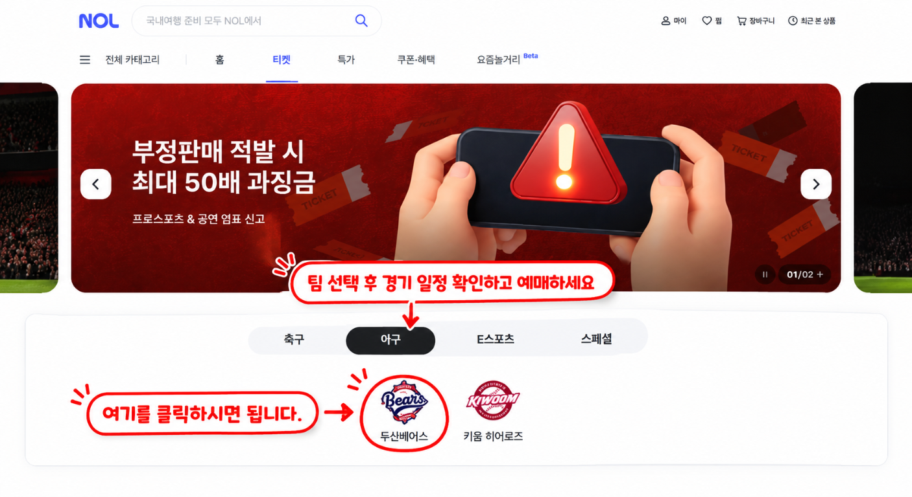

STEP 01
NOL에 로그인해 주세요
NOL 홈페이지 오른쪽 위의 마이 메뉴를 눌러 로그인합니다. 아직 회원이 아니라면 안내에 따라 가입을 진행해 주세요.

2026 SAMSUNG LIONS · TICKET GUIDE
처음 예매하셔도 어렵지 않도록, NOL 티켓에서 경기와 좌석을 선택하는 과정을 순서대로 안내해 드립니다.
야구 경기 예매하러 가기STEP BY STEP
안내 화면을 참고해 NOL 티켓에서 삼성 라이온즈 경기를 찾아보세요.
NOL 홈페이지 오른쪽 위의 마이 메뉴를 눌러 로그인합니다. 아직 회원이 아니라면 안내에 따라 가입을 진행해 주세요.

NOL 메인 화면의 카테고리에서 NOL 티켓을 선택합니다.

티켓 메뉴의 종목 목록에서 스포츠를 선택하면 경기 예매 페이지로 이동합니다.

야구 종목을 선택한 뒤 삼성 라이온즈와 원하는 경기 일정을 선택합니다. 경기별 예매 가능 여부와 일정을 확인하고 안내에 따라 좌석을 선택해 예매를 마무리하세요.

BEFORE YOU BOOK
경기별 일정, 좌석, 예매 가능 여부는 달라질 수 있으니 NOL 티켓의 최신 안내를 확인해 주세요.